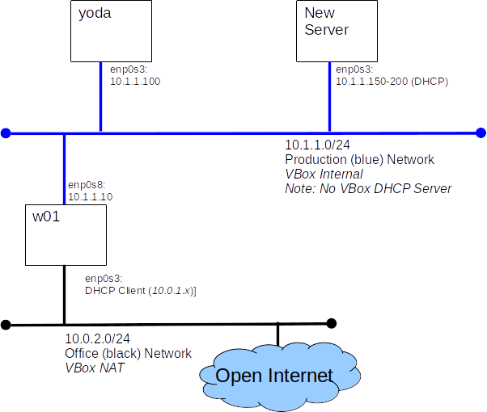

We will build the infrastructure required to perform automated network based installation and initial configuration of RHEL nodes. The techniques and technologies we will practice don't just apply to RHEL. Every major UNIX O/S has an automated installation and configuration process. Most use the same tools, all use the same concepts.
Relax and take a deep breath, it's time to dive back into Linux. This lab will require you to call upon the Linux administration skills you already know and to build a few new ones.
Demonstrate your working build server to your instructor.
You will build this configuration.

Alice, our friend from the Admin course, has been promoted and now manages the update server. Alice's first decree as all powerful root was to rename y01 to yoda.
Yoda servers as a YUM/DNF server. For our admin course we only needed a few packages. Now we need more. We will format the disk Alice added and mount it at /var/www to make space for all those new packages. Alice has added a disk, it shows as /dev/sdb
cp -a /var/www/* /mnt
rm -rf /var/www/*
UUID=2d8e7f1f-9832-4357-8d00-7a6429783f48 /var/www ext4 defaults 0 1
umount /mnt mount -a df
#Run on w01 as root yum clean all yum repolist
The RHEL DVD contains two repos: BaseOS and AppStream. We will copy these repos to /var/www/html so that they can be served to clients via http. More accurately we will copy the entire install ISO
mount /RHEL-8-3-0-BaseOS-x86_64
mkdir /var/www/html/83
cp -a /RHEL-8-3-0-BaseOS-x86_64/* /var/www/html/83
restorecon -R /var/www
To install Linux over the network we need a DHCP server that we control. Fortunately a lovely DHCP server is included with most Linux distributions including RHEL.
df /RHEL-8-3-0-BaseOS-x86_64/
yum install dhcp-server
systemctl enable dhcpd
systemctl start dhcpd
Job for dhcpd.service failed because the control process exited with error code. See "systemctl status dhcpd.service" and "journalctl -xe" for details.
The dhcp server needs to be told what sub-nets to manage or it won't start. While we are editing the dhcpd.conf file, we will also add the bits we need to support PXE-boot.
#
# DHCP Server Configuration file.
# see /usr/share/doc/dhcp-server/dhcpd.conf.example
# see dhcpd.conf(5) man page
#
option space pxelinux;
option pxelinux.magic code 208 = string;
option pxelinux.configfile code 209 = text;
option pxelinux.pathprefix code 210 = text;
option pxelinux.reboottime code 211 = unsigned integer 32;
option architecture-type code 93 = unsigned integer 16;
subnet 10.1.1.0 netmask 255.255.255.0 {
option routers 10.1.1.1;
range 10.1.1.150 10.1.1.200;
allow bootp;
allow booting;
# tell PXE client where to look for next file
next-server 10.1.1.100;
# tell PCS client what file to load next
filename "pxelinux.0";
}
systemctl start dhcpd
firewall-cmd --permanent --add-service=dhcp firewall-cmd --reload
Network based installation uses the Trivial FTP service (tftp) to download boot code.
TFTP is a very simple file transfer protocol that uses UDP on port 69 to serve files. By convention TFTP serves files from the /tftpboot directory.
yum install tftp-server
yum install tftp
systemctl enable tftp.socket
systemctl start tftp.socket
firewall-cmd --permanent --add-service=tftp firewall-cmd --reload
echo "hi tftp works!" > /var/lib/tftpboot/f1 curl tftp://localhost/f1
Put the files our client needs to boot in the correct places.
cd /var/lib/ rpm2cpio /RHEL-8-3-0-BaseOS-x86_64/BaseOS/Packages/syslinux-tftpboot-6.04-4.el8.noarch.rpm | cpio -imudv
mkdir /var/lib/tftpboot/pxelinux.cfg
default vesamenu.c32 prompt 1 timeout 5 display boot.msg label linux menu label Install system menu default kernel images/RHEL-8.3/vmlinuz append initrd=images/RHEL-8.3/initrd.img ip=dhcp inst.repo=http://10.1.1.100/83 ks=http://10.1.1.100/Kickstart/default.ks inst.kdump_addon=off label rescue menu label Rescue installed system kernel images/RHEL-8.3/vmlinuz append initrd=images/RHEL-8.3/initrd.img rescue label local menu label Boot from local drive localboot 0xffff
mkdir -p /var/lib/tftpboot/images/RHEL-8.3/ cp /RHEL-8-3-0-BaseOS-x86_64/images/pxeboot/initrd.img /var/lib/tftpboot/images/RHEL-8.3/ cp /RHEL-8-3-0-BaseOS-x86_64/images/pxeboot/vmlinuz /var/lib/tftpboot/images/RHEL-8.3/
With the infrastructure we have build so far we could perform network based installations, but we would still have to answer the set-up questions. This is bad, not only is it time consuming but it is prone to errors and inconsistencies. Kickstart to the rescue. Kickstart is RHEL way of supplying answers to the installer's questions from a file.
We will build a simple Kickstart file and publish it via httpd.
mkdir /var/www/html/Kickstart
# # Sample Kickstart file for COMP-10032 # # james, summer 2022 # #version=RHEL8 # install from the command line with no interaction cmdline # agree to RHEL end user legal agreement :( eula --agreed # install from yoda repo url --url=http://10.1.1.100/83/BaseOS # include the AppStream repo from yoda too repo --name="AppStream" --baseurl=http://10.1.1.100/83/AppStream %packages @minimal-environment nano bc bash-completion %end # Keyboard layouts keyboard --xlayouts='us' # System language lang en_CA.UTF-8 # Network information network --bootproto dhcp # storage configuration # # use only sda ignoredisk --only-use=sda # remove any existing partitions clearpart --all --drives=sda # a classic partition for /boot part /boot --size=500 --fstype=ext4 # Use the rest of the disk for LVM, leaving some free PE part pv.01 --size=1 --grow volgroup VG01 pv.01 logvol swap --recommended --vgname=VG01 --name=LV_swap logvol / --vgname=VG01 --size=1000 --fstype=ext4 --name=LV_root logvol /usr --vgname=VG01 --size=2500 --fstype=ext4 --name=LV_usr logvol /tmp --vgname=VG01 --size=200 --fstype=ext4 --name=LV_tmp logvol /var --vgname=VG01 --size=500 --fstype=ext4 --name=LV_var logvol /home --vgname=VG01 --size=200 --fstype=ext4 --name=LV_home # System timezone timezone America/New_York --isUtc # Root password (adminpass) rootpw --iscrypted $6$iUoPTAnSZ6Rv4RHQ$lmzXSayAdj4VeWvkGt6VYJ0nLacw.rOQWpmJ2dE1iOn6XjS/kcGtW8qeG6RHMJtNgdVbi00CqpOPb3g8lCZYd. reboot # Set the passwd policy. # This is a feature of the AnacondaUI, so it must be enclosed with an %anaconda ... %end block # %anaconda pwpolicy root --minlen=6 --minquality=1 --notstrict --nochanges --notempty pwpolicy user --minlen=6 --minquality=1 --notstrict --nochanges --emptyok pwpolicy luks --minlen=6 --minquality=1 --notstrict --nochanges --notempty %end # Lines in the %post block will be executed by the shell after installation # %post # we will manage our own repos thank-you subscription-manager config --rhsm.manage_repos=0 # configure bash the way james likes it ;) cat >/root/.bashrc <<EOF if [ -f /etc/bashrc ]; then . /etc/bashrc fi set -o vi alias lt='ls -lrt' alias hg='history | grep' EOF %end
All the ground work is done - it's time to build a server. "Look Ma' no hands!"
Now we get to see how easy it is to modify our installation settings, and build some more servers.
You may want to review the Kickstart documentation found in Notes and Reference Material
We will need yoda for all of our labs and test. If you built yoda on a classroom computer, you will need to make sure that you copy the contents of the VirtualBox VM folder to you your external drive. The folder you want is VirtualBox VMs/yoda(10.1.1.100). Double clicking on the yoda(10.1.1.100).vbox file contained in this folder should register the yoda VM with VirtualBox on any new host.